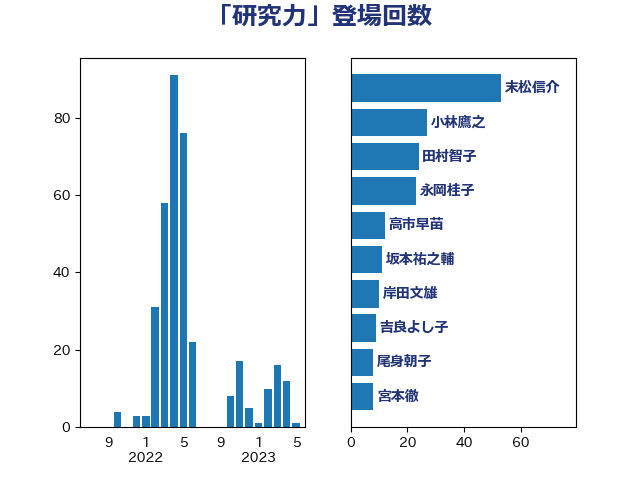

単語「研究力」

| 末松信介 | 自由民主党 | 53 回 |
| 小林鷹之 | 自由民主党 | 27 回 |
| 田村智子 | 日本共産党 | 24 回 |
| 永岡桂子 | 自由民主党 | 23 回 |
| 高市早苗 | 自由民主党 | 12 回 |
| 坂本祐之輔 | 立憲民主党 | 11 回 |
| 岸田文雄 | 自由民主党 | 10 回 |
| 吉良よし子 | 日本共産党 | 9 回 |
| 尾身朝子 | 自由民主党 | 8 回 |
| 宮本徹 | 日本共産党 | 8 回 |
| 西岡秀子 | 国民民主党 | 7 回 |
| 田中英之 | 自由民主党 | 7 回 |
| 堂故茂 | 自由民主党 | 7 回 |
| 高橋はるみ | 自由民主党 | 5 回 |
| 平林晃 | 公明党 | 5 回 |
| 柴田巧 | 日本維新の会 | 4 回 |
| 上野通子 | 自由民主党 | 4 回 |
| 鈴木俊一 | 自由民主党 | 3 回 |
| 白石洋一 | 立憲民主党 | 3 回 |
| 宮本岳志 | 日本共産党 | 3 回 |
| 大野敬太郎 | 自由民主党 | 3 回 |
| 緑川貴士 | 立憲民主党 | 2 回 |
| 簗和生 | 自由民主党 | 2 回 |
| 秋野公造 | 公明党 | 2 回 |
| 池田佳隆 | 自由民主党 | 2 回 |
| 新妻秀規 | 公明党 | 2 回 |
| 大島敦 | 立憲民主党 | 2 回 |
| 城井崇 | 立憲民主党 | 2 回 |
| 吉田はるみ | 立憲民主党 | 2 回 |
| 鈴木義弘 | 国民民主党 | 1 回 |
| 萩生田光一 | 自由民主党 | 1 回 |
| 舩後靖彦 | れいわ新選組 | 1 回 |
| 稲津久 | 公明党 | 1 回 |
| 熊谷裕人 | 立憲民主党 | 1 回 |
| 橘慶一郎 | 自由民主党 | 1 回 |
| 横山信一 | 公明党 | 1 回 |
| 森山浩行 | 立憲民主党 | 1 回 |
| 梅谷守 | 立憲民主党 | 1 回 |
| 柴山昌彦 | 自由民主党 | 1 回 |
| 本田太郎 | 自由民主党 | 1 回 |
| 有村治子 | 自由民主党 | 1 回 |
| 斎藤嘉隆 | 立憲民主党 | 1 回 |
| 掘井健智 | 日本維新の会 | 1 回 |
| 平将明 | 自由民主党 | 1 回 |
| 山本博司 | 公明党 | 1 回 |
| 山崎正恭 | 公明党 | 1 回 |
| 宮口治子 | 立憲民主党 | 1 回 |
| 和田政宗 | 自由民主党 | 1 回 |
| 吉田統彦 | 立憲民主党 | 1 回 |
| 古賀友一郎 | 自由民主党 | 1 回 |
| 伊藤孝恵 | 国民民主党 | 1 回 |
| 井出庸生 | 自由民主党 | 1 回 |
| 中村裕之 | 自由民主党 | 1 回 |
| 三木圭恵 | 日本維新の会 | 1 回 |